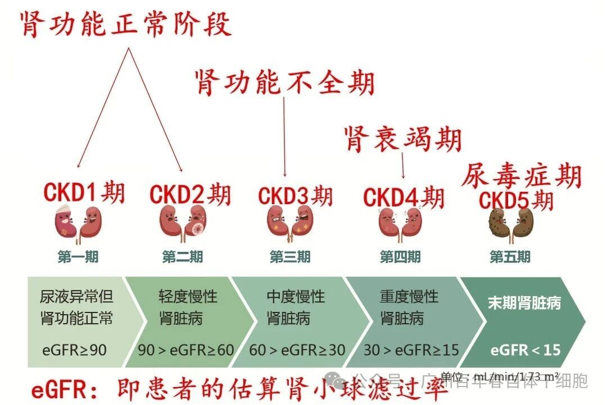
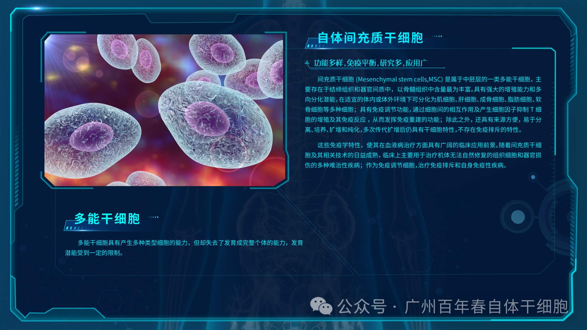
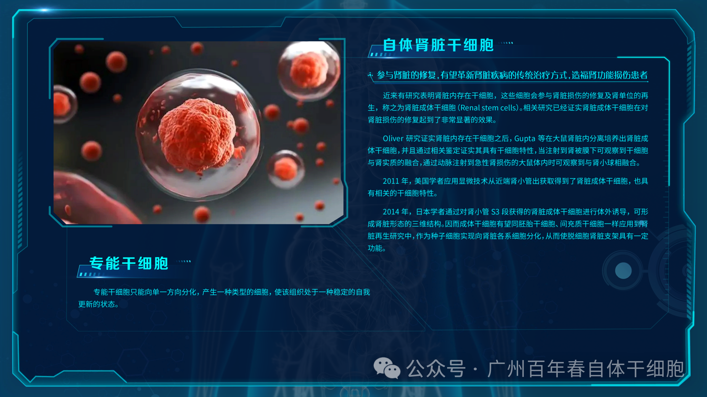
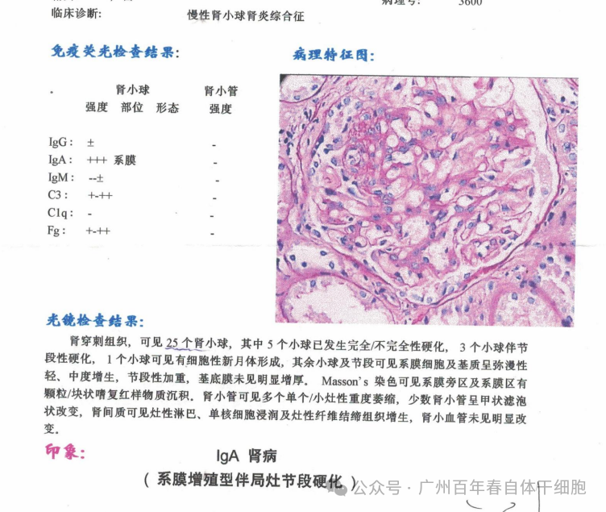
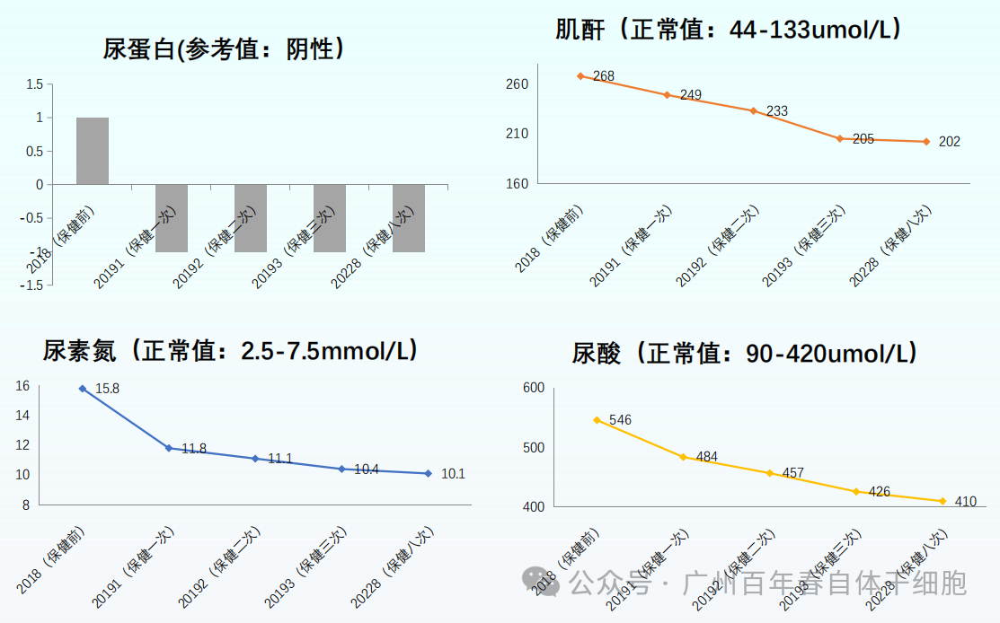
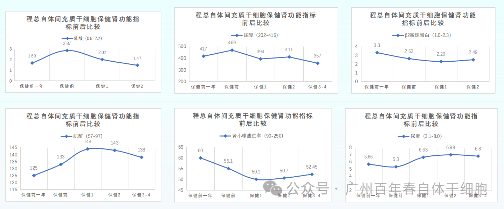

别等身体亮红灯！百年春自体干细胞，为您定制细胞级抗衰防线
2026-03-04

About Us
关于百年春
当肾脏遭遇损伤，传统治疗往往陷入“治标难治本”的困境。透析与肾移植虽能延续生命，却无法从根本上修复受损组织；药物治疗仅能缓解症状，长期使用更可能加重肾脏负担。如今，百年春自体干细胞技术以“自体间充质干细胞+自体肾脏干细胞”双细胞协同修复为核心，为肾损伤患者带来全新希望。

这一阶段肌酐正常，肾功能尚未受损。只有一些尿蛋白、潜血、水肿、高血压等临床指征。除了水肿、高血压会让患者出现不适感之外，尿蛋白、潜血等都是“静悄悄的”。这一阶段是最容易治愈的，但很多患者因为“不疼不痒”，白白错过了治疗时机，所以定期体检非常重要。
所谓的肾功能代偿期，指的是肾功能轻微受损，靠肾脏自身的代偿功能就可以满足身体的日常需要。这一阶段，血肌酐基本处于133~177μmoI/L之间。大约还有一半的肾单位可以正常工作，所以患者本人并没有什么感觉，常常延误治疗。
所谓失代偿期，指的是肾功能受损较为严重，肾脏自身的代偿功能已经无法满足身体的日常需要。这一阶段，血肌酐基本处于178~442μmoI/L之间，肾单位受损已经超过三分之二甚至更多，患者已经开始感觉到乏力。
当血肌酐超过443μmoI/L时，就已经进入了肾衰竭期，也就是所谓的慢性肾衰竭了。此时，肾脏的代偿功能已经无法弥补肾单位的坏死了，肾功能下降已经进入了一个不可逆的阶段，每时每刻都有大片肾细胞被杀死。这一阶段，患者开始感到的症状，比如贫血、头晕、乏力、恶心等。
慢性肾衰竭发展到尿毒症期大约需要15年左右的时间，此时超过90%的肾单位已经坏死了，肾脏体积萎缩至6cm以下，而且基本没有尿液产生了。到了这个阶段，患者的感觉会非常强烈，头晕、恶心、呕吐、心衰、乏力等各种症状频繁出现，由于血液中毒素淤积过多，其他脏器也开始受到侵害。 |
慢性肾病患者常面临“指标控制-病情反复”的恶性循环，而急性肾损伤（AKI）患者则因缺乏有效修复手段，导致肾功能不可逆衰退。数据显示，我国慢性肾病患者超1亿，其中30%最终发展为终末期肾病，传统治疗模式已难以满足临床需求。
自体干细胞治疗的出现，为肾损伤治疗提供了全新思路。其核心机制在于通过细胞的多向分化潜能，直接修复受损肾脏组织，同时调节免疫微环境，抑制炎症与纤维化进程。目前，自体干细胞已成为肾损伤治疗的研究热点，其可通过静脉输注或局部注射，精准归巢至肾脏病灶，分化为肾小球细胞、肾小管上皮细胞等，重建肾脏结构与功能。
 |   |
1.分化和替代作用：可直接分化为肾小球细胞、肾小管细胞等肾脏细胞类型，更精准地修复受损肾脏组织。在肾脏损伤模型中，肾脏干细胞可促进肾小管上皮细胞再生，恢复肾脏功能。 2.维持肾脏微环境稳定：分泌多种生长因子和细胞因子，调节肾脏细胞的增殖、分化和凋亡，维持肾脏微环境的稳定。例如，肾脏干细胞可分泌胰岛素样生长因子（IGF）等，促进肾脏细胞的修复和再生。 3.免疫调节与抗炎作用：可抑制炎症细胞的浸润和炎症因子的释放，减轻肾脏炎症反应。在慢性肾病模型中，肾脏干细胞治疗可降低肾脏炎症指标，改善肾功能。 4.旁分泌作用：分泌血管内皮生长因子（VEGF）、肝细胞生长因子（HGF）等因子，促进肾脏血管生成，改善肾脏血流灌注；同时分泌抗炎因子（如IL-10、TGF-β），抑制炎症反应，减轻肾脏损伤。临床研究显示，间充质干细胞治疗可降低糖尿病肾病患者的尿蛋白水平，延缓肾功能恶化。 5.抗纤维化作用：下调转化生长因子-β（TGF-β）等促纤维化信号通路，阻止肾小管上皮细胞向肌成纤维细胞转化，减少细胞外基质沉积，延缓肾脏纤维化进程。 |
临床案例：
案例一：IGA肾病17年患者莫先生，蛋白尿、尿酸高、肌酐高、尿素氮高，处于失代偿期，肾功能已经损伤严重，接近尿毒症状态。
保健方案：回输6次3亿细胞单位的自体间充质干细胞保健
保健一次后蛋白尿转阴，尿酸、肌酐和尿素氮显著下降，代谢功能改善。莫先生高度认可百年春自体干细胞的修复效果，目前已接受8次自体间充质干细胞保健，并主动推荐家人和身边朋友一起加入百年春自体干细胞健康保健。
 |   |
案例二：IGA肾病10年患者程先生，蛋白尿、尿酸、肌酐、乳酸等指标持续上升，肾小球滤过滤下降、微球蛋白超出标准范围，这些指标显示程先生肾功能处于下降的过程，肾脏结构受到持续破坏。
保健方案：回输4次3亿细胞单位的自体间充质干细胞保健
保健后一月内尿蛋白转阴、乳酸、尿酸、微球蛋白下降，泡泡尿消失，肾功能指标逐渐下降，身体疲惫感消失，多次保健后各项指标恢复正常化，目前已接受6次自体间充质干细胞保健，程先生已把自体干细胞保健纳入每年的健康计划。
 |
行动号召：
肾损伤的修复窗口期极为短暂，早期干预是关键。如果您或家人正面临肾损伤困扰，不妨考虑自体干细胞治疗——这不仅是技术的选择，更是对生命质量的尊重。百年春自体干细胞，以科学之名，为肾脏健康保驾护航。
立即咨询，开启您的肾脏修复之旅！